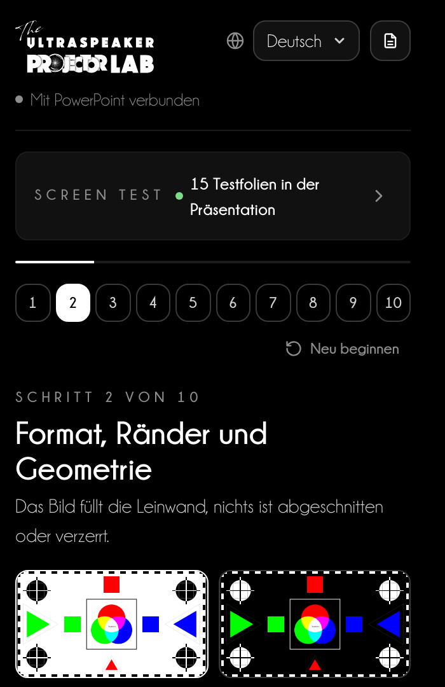
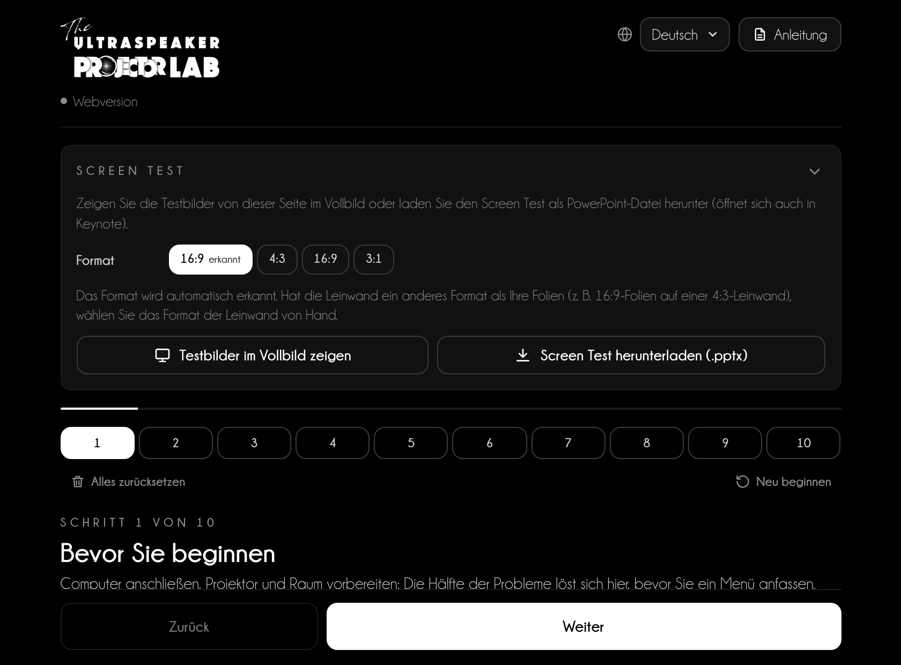
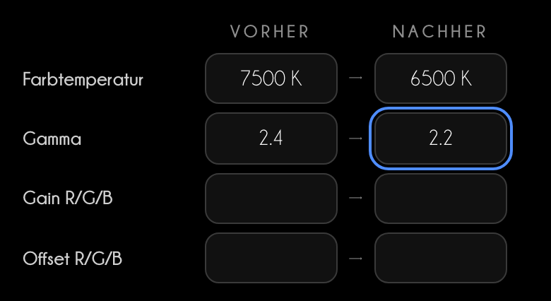
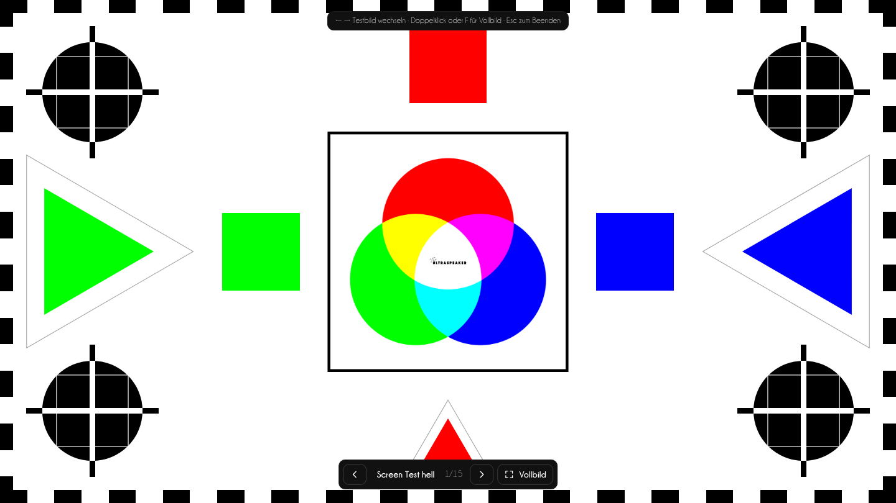
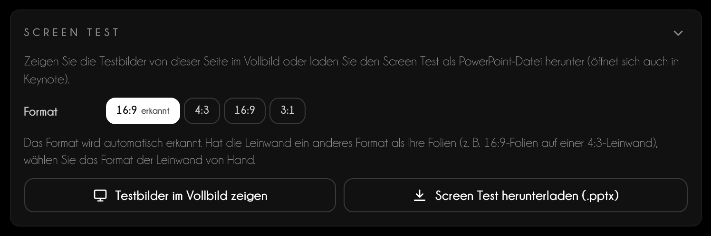
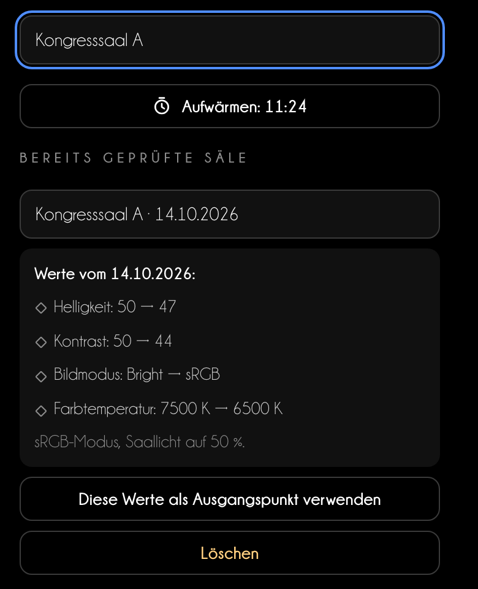
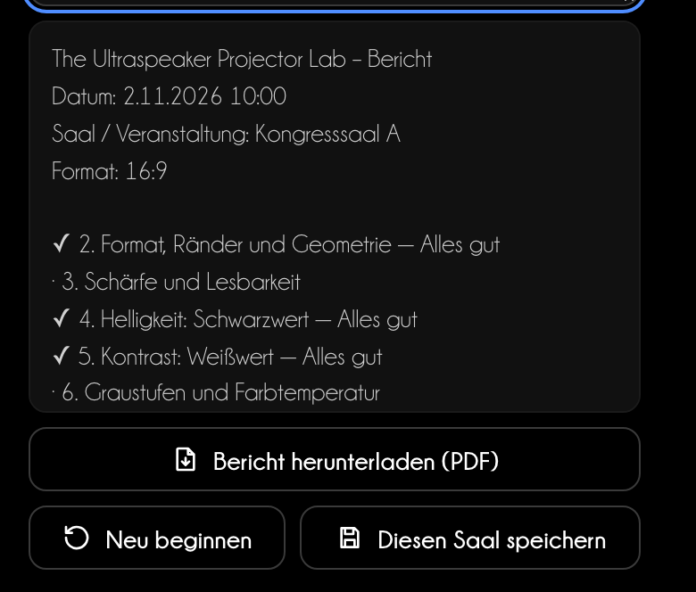

Der Projektor richtig eingestellt, bevor Sie sprechen
Projector Lab führt Sie in 10 Schritten durch Format, Schärfe, Schwarz, Weiß und Farbe des Projektors – mit Testbildern, die zu Ihrer Präsentation passen.
Version 1.2 · November 2026theultraspeaker.com
Inhalt
In dieser Anleitung
01Bevor Sie beginnenWas Projector Lab macht, wo Sie es finden, PowerPoint und Webversion
02Die OberflächeDie Bereiche des Bildschirms, einer nach dem anderen
03Vor dem Vortrag: der Ablauf in 10 SchrittenWorauf Sie bei jedem Testbild achten und welches Menü Sie einstellen
04Screen TestDie Testbilder im Vollbild und die .pptx-Datei für PowerPoint und Keynote
05Gespeicherte Säle, Timer und BerichtAufwärmen, Werte zum Wiederverwenden und ein Bericht zum Teilen
06Tipps für VortragendeFrüh da sein, was Sie die Technik fragen, 4:3- und 3:1-Leinwände
07Häufige FragenHäufige Probleme und Support
01
Bevor Sie beginnen
Jeder Saal hat einen anderen Projektor. Projector Lab lässt Sie ein Testbild zeigen, sagt Ihnen, worauf Sie achten und welches Projektormenü Sie einstellen. In 10–15 Minuten sehen Ihre Folien und klinischen Fotos aus wie auf Ihrem Monitor.
In PowerPoint
Registerkarte Start → Gruppe The Ultraspeaker → Projector Lab. Der Aufgabenbereich öffnet sich rechts. Testfolien einfügen fügt der Präsentation 15 Testfolien in ihrem Format hinzu, mit den Anweisungen in den Referentennotizen.
Im Browser
niki977.github.io/ultraspeaker-projector-lab, ohne Installation. Zeigen Sie die Testbilder im Vollbild auf dem Projektor oder laden Sie den Screen Test als .pptx für PowerPoint und Keynote herunter. Auf dem Smartphone haben Sie den Ablauf griffbereit.
Was auf dem Gerät bleibt
Sprache, laufender Ablauf, Timer und gespeicherte Säle bleiben im Speicher des Browsers oder von PowerPoint. Es werden keine Daten an einen Server gesendet.

PowerPoint-Aufgabenbereich
Funktion
PowerPoint
Webversion
Testfolien in der Präsentation
Ja
—
Testbilder im Vollbild
In einem Fenster
Ja
Screen Test .pptx zum Herunterladen
—
Ja
Klinisches Foto
In der Testfolie
Im Vollbild-Testbild
„Alles zurücksetzen“
—
Ja
02
Die Oberfläche
Dieselbe Seite in der Webversion und im Aufgabenbereich: oben der Screen Test, darunter die 10 Schritte.

1234567
Webversion · Computer
1Logo. öffnet theultraspeaker.com. Darunter die Statuszeile: „Webversion“ oder „Mit PowerPoint verbunden“.
2Anleitung und Sprache. öffnet diese PDF-Anleitung; das Menü ändert die Sprache von Oberfläche, Testbildern und Notizen.
3Screen Test. Format (automatisch erkannt oder 4:3, 16:9, 3:1), Testbild-Fenster, Download oder Einfügen.
4Schritte. 1 bis 10; der Punkt zeigt das Ergebnis: grün in Ordnung, bernstein überarbeiten, grau übersprungen.
5Neu beginnen. „Neu beginnen“ löscht Ergebnisse und Antworten; in der Webversion löscht „Alles zurücksetzen“ auch die Säle.
6Der Schritt. worauf Sie achten, die Frage „Was sehen Sie?“, was Sie einstellen, die verwendeten Werte und das Ergebnis.
7Zurück / Weiter. immer unten; im letzten Schritt „Bericht herunterladen (PDF)“.
03
Vor dem Vortrag: der Ablauf in 10 Schritten
Jeder Schritt ist gleich aufgebaut. Zeigen Sie das Testbild, schauen Sie von der letzten Reihe, beantworten Sie die Frage: Das Lab sagt Ihnen, welches Menü Sie in welche Richtung und wie weit einstellen.
Die Frage „Was sehen Sie?“
In den Schritten 4–8 tippen Sie an, was Sie sehen: zum Beispiel das erste Feld, das sich von Schwarz abhebt. Die Antwort nennt die Korrektur, und das Ergebnis des Schritts aktualisiert sich von selbst.
Farbstich
In Schritt 6 wählen Sie in jeder Gruppe das Grau, das am neutralsten wirkt. Ist es nicht die 5 in der Mitte, erkennt das Lab den Farbstich und nennt Farbtemperatur, Farbton oder RGB-Verstärkung.
Schritt 4 · SchwarzwertSchritt 6 · Graustufen im Vergleich
Verwendete Werte
Notieren Sie die Projektorwerte vor und nach dem Einstellen: Sie erscheinen im Bericht und in den gespeicherten Sälen.

Werte vorher und nachher
1 · Bevor Sie beginnen
Computer anschließen, Projektor und Raum vorbereiten: Die Hälfte der Probleme löst sich hier, bevor Sie ein Menü anfassen.
Schalten Sie den Projektor rechtzeitig ein: mit Lampe mindestens 15 Minuten, besser 30, denn Helligkeit und Farbe stabilisieren sich erst im warmen Zustand; Laser- oder LED-Modelle brauchen 5–10.
Laptop am Netzteil; Bildschirmschoner und Energiesparen aus.
2 · Format, Ränder und Geometrie
Das Bild füllt die Leinwand, nichts ist abgeschnitten oder verzerrt.
Achten Sie auf: Der Schachbrettrand ist auf allen vier Seiten vollständig. Fehlt ein Stück, ist das Bild beschnitten (Overscan).
Einstellen: Stellen Sie den Projektor zuerst rechtwinklig und mittig zur Leinwand: Das ist die beste Korrektur.
3 · Schärfe und Lesbarkeit
Scharfe Sterne in der Mitte und in den Ecken, und die kleinste Schriftgröße, die in der letzten Reihe lesbar ist.
Achten Sie auf: Im großen Stern bleiben die Strahlen fast bis zur Mitte getrennt, ohne breiten grauen Fleck.
Einstellen: Fokusring oder Fokus-Taste: in der Mitte scharf stellen, dann die Ecken prüfen und den besten Kompromiss suchen.
4 · Helligkeit: Schwarzwert
Zeichnung in den Schatten ohne gräuliches Schwarz.
Achten Sie auf: 0 % ist so schwarz wie der Hintergrund.
Einstellen: Menü Helligkeit / Brightness: Es stellt den Schwarzwert ein, nicht die Lampenleistung.
5 · Kontrast: Weißwert
Volles Weiß ohne Ausbrennen: helle Details bleiben sichtbar.
Achten Sie auf: Felder bis 97–98 % heben sich noch vom weißen Hintergrund ab.
Einstellen: Menü Kontrast / Contrast: senken, bis 97 und 98 % wieder erscheinen, dann stoppen.
6 · Graustufen und Farbtemperatur
Neutrale Grautöne und gleichmäßige Stufen: die Grundlage für richtige Farben.
Achten Sie auf: Alle 11 Stufen sind unterscheidbar, von 0 bis 100 %.
Einstellen: Farbtemperatur: Normal / Mittel / 6500 K (D65). Hoch = bläulich, Niedrig = gelblich.
7 · Farbe und Sättigung
Kräftige, aber naturgetreue Farben ohne verschobene Töne oder verklumpte Bereiche.
Achten Sie auf: In den Balken ist Gelb gelb (nicht grün), Cyan nicht blau, Magenta nicht rot.
Einstellen: Sättigung / Farbe: senken, wenn die letzten Stufen verschmelzen; erhöhen, wenn alles matt wirkt.
8 · Klinische Referenzen
Ihre klinischen Fotos sollen Schmelz, Ränder und Gewebe so zeigen, wie Sie sie am Monitor sehen.
Um ein eigenes klinisches Foto zu sehen, verwenden Sie „Mit einem eigenen klinischen Foto testen“ („Eigenes klinisches Foto einfügen“ in PowerPoint) oder ziehen Sie das Foto, JPG oder PNG, in den gestrichelten Rahmen: Es erscheint im Testbild „Ihr Foto“.
Achten Sie auf: Alle Schmelz-Weißtöne sind unterscheidbar, auch der zweite vom reinen Weiß: sonst verschwinden Charakterisierungen und helle Farbtöne.
Keine Flecken, Farbzonen oder festen Punkte im Bild.
Achten Sie auf: Weiß: keine dunklen oder farbigen Flecken; die Ecken sind nicht viel dunkler als die Mitte.
Einstellen: Objektiv mit einem Mikrofasertuch reinigen.
10 · Abschlusskontrolle
Eine echte Folie prüfen, Einstellungen notieren und die Testfolien entfernen.
Zeigen Sie Ihre anspruchsvollste Folie: ein klinisches Foto, den kleinsten Text, ein Diagramm.
Betrachten Sie sie aus der letzten Reihe und von einer Seite des Saals.
04
Screen Test
15 Testbilder in derselben Reihenfolge wie die Schritte. Sie passen sich dem tatsächlichen Format der Leinwand an: Die Ränder des Testbilds entsprechen denen des Projektors.

Heller Screen Test im Vollbild
Drei Arten, sie zu zeigen
In der Präsentation (PowerPoint): Testfolien einfügen, schließen Sie den Projektor im Modus Erweitern an und starten Sie die Bildschirmpräsentation ab der ersten Testfolie. Die Anweisungen stehen in den Referentennotizen.
In einem Fenster (PowerPoint): Testbilder in einem Fenster öffnen, ziehen Sie das Fenster auf die Projektor-Leinwand und doppelklicken Sie. Der Aufgabenbereich wechselt das Testbild bei jedem Schritt.
Im Browser: Testbilder im Vollbild zeigen. Pfeile ←→ wechseln das Testbild, F für Vollbild, Esc zum Beenden.
Die .pptx-Datei für PowerPoint und Keynote
Wählen Sie in der Webversion das Format der Leinwand und drücken Sie Screen Test herunterladen (.pptx). Die Datei enthält die 15 Folien mit Notizen; Keynote öffnet sie über Ablage → Öffnen.

123
Karte Screen Test · Webversion
1Format. automatisch erkannt; wählen Sie das Format der Leinwand von Hand, wenn es von Ihren Folien abweicht.
2Testbilder im Vollbild. auf dem Projektor, ohne die Präsentation zu ändern.
3Download. Screen Test .pptx im gewählten Format.
Schritt
Testbilder
2 · Format, Ränder und Geometrie
Screen Test hell, Screen Test dunkel, Raster
3 · Schärfe und Lesbarkeit
Schärfe
4 · Helligkeit: Schwarzwert
Schwarz
5 · Kontrast: Weißwert
Weiß
6 · Graustufen und Farbtemperatur
Graustufen, Graustufenvergleich
7 · Farbe und Sättigung
SMPTE-Balken, Farbverläufe
8 · Klinische Referenzen
Klinisch, Ihr Foto
9 · Gleichmäßigkeit und Sauberkeit
Vollweiß, Vollgrau, Vollschwarz
05
Gespeicherte Säle, Timer und Bericht
Drei Werkzeuge, damit Sie nicht in jedem Saal von vorn beginnen.
Aufwärm-Timer
Drücken Sie in Schritt 1 Aufwärm-Timer starten (15 Min.). Eine Lampe braucht mindestens 15 Minuten, besser 30; Laser und LED sind nach 5–10 stabil.
Gespeicherte Säle
Schreiben Sie in Schritt 1 den Namen des Saals.
Notieren Sie die Projektorwerte in den Schritten.
Drücken Sie in Schritt 10 Diesen Saal speichern.
Wählen Sie beim nächsten Mal den Saal in Schritt 1 und drücken Sie Diese Werte als Ausgangspunkt verwenden.

Schritt 1 · gespeicherter Saal und Timer
Bericht
In Schritt 10 fasst der Bericht Datum, Format, Ergebnisse, Antworten und Werte zusammen. Fügen Sie eine Notiz hinzu und drücken Sie Bericht herunterladen (PDF): Sie erhalten ein PDF für die Technik (im Bereich öffnet es sich im Browser).
Neu beginnen löscht Ergebnisse, Antworten und Werte, behält aber die gespeicherten Säle. In der Webversion löscht Alles zurücksetzen auch Säle und Format.

Schritt 10 · Bericht
06
Tipps für Vortragende
Die beste Einstellung ersetzt nicht die Vorbereitung.
Tipp für Vortragende
Seien Sie 30 Minuten vorher im Saal. Schalten Sie den Projektor sofort ein, gehen Sie den Ablauf durch, während er aufwärmt, und schließen Sie mit Ihrer anspruchsvollsten Folie: einem klinischen Foto, dem kleinsten Text, einer Grafik.
Wenn die Technik Sie den Projektor nicht bedienen lässt
Bitten Sie um drei konkrete Dinge: Modus sRGB oder Präsentation, Overscan aus, Trapezkorrektur minimal. Den Rest erledigen Sie am Computer: native Auflösung, Farbformat RGB Full, Night Shift und Nachtmodus aus.
Leinwand
Was passiert
Was tun
4:3 mit 16:9-Folien
Schwarze Balken oben und unten
Balken akzeptieren; im Screen Test 4:3 wählen, um die Ränder der Leinwand zu prüfen
16:9 mit 4:3-Folien
Schwarze Balken seitlich
Bild nicht strecken: Kreise würden oval
3:1 (Panorama-Leinwände)
Kleine Folien in der Mitte oder beschnitten
Format vorher erfragen; mit dem Screen Test 3:1 und dem größten Text testen
07
Häufige Fragen
Ich sehe Projector Lab nicht auf der Registerkarte Start.
Installieren Sie das Add-In erneut nach der Seite „Installation“ der Website, dann PowerPoint schließen und wieder öffnen.
Das erkannte Format ist falsch.
Wählen Sie 4:3, 16:9 oder 3:1 von Hand in der Karte Screen Test. Weicht es von Ihren Folien ab, öffnet sich der Screen Test in einer neuen Präsentation dieses Formats.
Ich möchte meine Präsentation nicht ändern.
Nutzen Sie Testbilder in einem Fenster öffnen: Die Testbilder bleiben in einem eigenen Fenster. Vor dem Vortrag entfernt Testfolien entfernen ohnehin alle Testfolien.
Die Menüs meines Projektors heißen anders.
Jeder Hersteller hat eigene Namen: Das Lab nennt die gängigsten (Brightness, Contrast, Aspect, Overscan). Im Zweifel fragen Sie den Techniker vor Ort.
Wohin gehen meine Daten?
Nirgendwohin: Sie bleiben auf dem Gerät. In der Webversion löscht Alles zurücksetzen sie.
Support
Schreiben Sie an info@theultraspeaker.com und nennen Sie Computer und PowerPoint-Version.
Knowledge is not enough. From expert to Ultraspeaker.